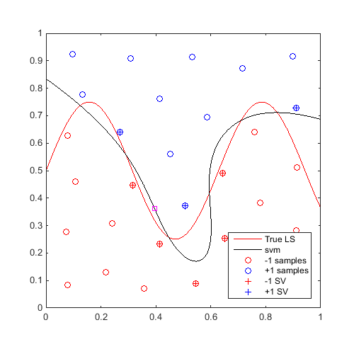
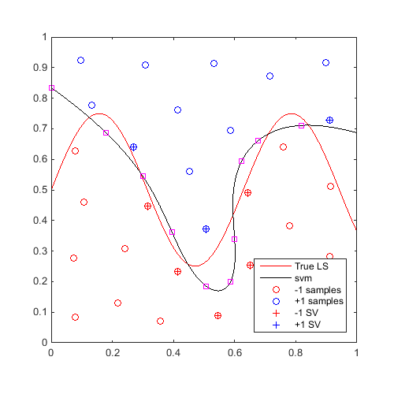
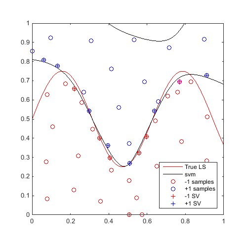
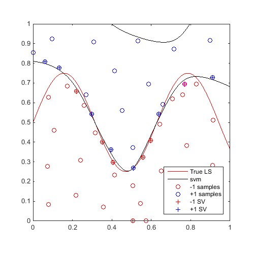

Examples / Adaptive sampling / mm
This file is a complete demo of the capability of the mm function from the CODES toolbox.
Contents
Documentation
The documentation for the mm function can be found here.
Set rng
Set random number generator seed:
rng(0)
Simple example
Define a simple sinusoidal problem:
f=@(x)x(:,2)-sin(10*x(:,1))/4-0.5; x=CODES.sampling.cvt(30,2); y=f(x);
Train an SVM, then find and plot a "max-min" sample:
svm=CODES.fit.svm(x,y); x_mm=CODES.sampling.mm(svm,[0 0],[1 1]); [X,Y]=meshgrid(linspace(0,1,100)); Z=reshape(f([X(:) Y(:)]),100,100); figure('Position',[200 200 500 500]) contour(X,Y,Z,[0 0],'r') hold on svm.isoplot('lb',[0 0],'ub',[1 1],'prev_leg',{'True LS'}) plot(x_mm(1),x_mm(2),'ms') axis square
Comparison of Computational Time for: Parallel and Serial; Matlab and CODES MultiStart
Start a parallel pool:
gcp;
Compare compuational time of different scenarios to compute 10 "max-min":
CODES.common.disp_box('Using Matlab MultiStart') tic; svm=CODES.fit.svm(x,y); CODES.sampling.mm(svm,[0 0],[1 1],'nb',10,'MultiStart','MATLAB'); disp(['Serial : ' CODES.common.time(toc)]) tic; svm=CODES.fit.svm(x,y,'UseParallel',true); CODES.sampling.mm(svm,[0 0],[1 1],'nb',10,'MultiStart','MATLAB'); disp(['Parallel : ' CODES.common.time(toc)]) CODES.common.disp_box('Using CODES MultiStart') tic; svm=CODES.fit.svm(x,y); CODES.sampling.mm(svm,[0 0],[1 1],'nb',10,'MultiStart','CODES'); disp(['Serial : ' CODES.common.time(toc)]) tic; svm=CODES.fit.svm(x,y,'UseParallel',true); CODES.sampling.mm(svm,[0 0],[1 1],'nb',10,'MultiStart','CODES'); disp(['Parallel : ' CODES.common.time(toc)])
########################### # Using Matlab MultiStart # ########################### Serial : 17s Parallel : 10s ########################## # Using CODES MultiStart # ########################## Serial : 15s Parallel : 9s
Parallel update
On the same example, find and plot 10 max-min samples:
f=@(x)x(:,2)-sin(10*x(:,1))/4-0.5; x=CODES.sampling.cvt(30,2); y=f(x); svm=CODES.fit.svm(x,y,'UseParallel',true); x_mm=CODES.sampling.mm(svm,[0 0],[1 1],'nb',10); [X,Y]=meshgrid(linspace(0,1,100)); Z=reshape(f([X(:) Y(:)]),100,100); figure('Position',[200 200 500 500]) contour(X,Y,Z,[0 0],'r') hold on svm.isoplot('lb',[0 0],'ub',[1 1],'prev_leg',{'True LS'}) plot(x_mm(:,1),x_mm(:,2),'ms') axis square
Sequential refinement
On the same example, for 20 iterations, find a "max-min" sample and update the svm:
f=@(x)x(:,2)-sin(10*x(:,1))/4-0.5;
x=CODES.sampling.cvt(30,2);
y=f(x);
svm=CODES.fit.svm(x,y,'UseParallel',true);
[X,Y]=meshgrid(linspace(0,1,100));
Z=reshape(f([X(:) Y(:)]),100,100);
Plot first and last iteration:
x_mm=CODES.sampling.mm(svm,[0 0],[1 1]); svm=svm.add(x_mm,f(x_mm)); figure('Position',[200 200 500 500]) contour(X,Y,Z,[0 0],'r') hold on svm.isoplot('lb',[0 0],'ub',[1 1],'prev_leg',{'True LS'}) plot(x_mm(:,1),x_mm(:,2),'ms') axis square axis square for i=2:20 x_mm=CODES.sampling.mm(svm,[0 0],[1 1]); svm=svm.add(x_mm,f(x_mm)); end figure('Position',[200 200 500 500]) contour(X,Y,Z,[0 0],'r') hold on svm.isoplot('lb',[0 0],'ub',[1 1],'prev_leg',{'True LS'}) plot(x_mm(:,1),x_mm(:,2),'ms') axis square axis square
 

A video of this sequential update can be found here.
Copyright © 2015 Computational Optimal Design of Engineering Systems (CODES) Laboratory. University of Arizona.
|
|
Computational Optimal Design of Engineering Systems |

|